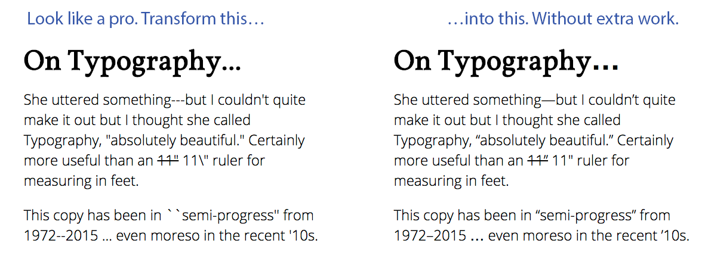

Why Typography Matters
Proper typesetting can help increase reader retention and understanding, because text flows better and is easier to folllow. While the differences it applies to your may seem subtle, pedantic or even petty, they can in fact make a difference.
There is unlimited content on the web. Typography aims to make yours more impactful.
Who is Typography For?
Do you write content for the web? Chances are Typography is for you. Mac user borrowing a PC to finish an article or think two spaces should follow periods? Typography is definitely for you!
Even if you know the “typographically correct” keyboard shortcuts, it’s easy to miss a foot-mark (') when you meant to make a word possessive with an apostrophe (’). Then there are double-spaces, copyright signs, emdashes, endashes, and more … (see what I did there?).
If you have never considered typesetting or don’t have time to learn the rules—but care about content readibility—Typography adds a tiny bit of extra polish.
How Typography Works
Typography is a MODX output filter you can be apply to any field, including Template Variables. For example, applying it to the main content field is straightforward. In your templates, find the content field which looks like the following:
[[*content]]
And then add the output filter to it:
[[*content:typography]]
What Typography Does
Typography uses a slighty-tweaked SmartyPants library to make content prettier as MODX pages render. Because it is an output filter, it doesn’t actually change your content.
To install Typography, use the MODX Package Manager from inside your MODX installation. You can also manually install it by creating a Snippet named “typography“ and copying and pasting the contents of one of the downloadable files in the header into the Snippet content field.
Text Replacements
Typography can perform the following transformations:
- Straight quotes ( " and ' ) into “curly” quote HTML entities
- Backticks-style quotes (``like this'') into “curly” quote HTML entities
- Dashes (“--” and “---”) into en- and em-dash entities
- Three consecutive dots (“...”) into an ellipsis entity
Typography does not modify characters within <pre>, <code>, <kbd>, or <script> tag blocks. Typically, these tags are used to display text where smart quotes and other “smart punctuation” would not be appropriate, such as source code or example markup.
Bugs and Feature Requests
Having trouble with Typography or have an idea to make it better? Check out its Github project at https://github.com/rthrash/typography.